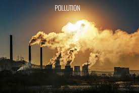

POLLUTION

What is pollution?
Pollution is the introduction of contaminants into the natural environment that cause adverse change. Pollution can take the form of chemical substances or energy,
such as noise, heat or light. Pollutants, the components of pollution, can be either foreign substances/energies or naturally occurring contaminants.
Pollution is often
classed as point source or nonpoint source pollution. In 2015, pollution killed 9 million people in the world.
Causes of pollutions
- Pollution from cars, trucks, and other vehicles is and has been our major environmental pollution issue for almost a century now. The problem is we did not realize this until the problem had manifested to monumental proportions.
- Fossil fuel emissions from power plants which burn coal as fuel contributed heavily, along with vehicles burning fossil fuels, to the production of smog. Smog is the result of fossil fuel combustion combined with sunlight and heat. The result is a toxic gas which now surrounds our once pristine planet. This is known as “ozone smog” and means we have more problems down here than we do in the sky.
- Carbon dioxide is another product from all of the vehicles on the planet as well as unreformed power plants and other industrial facilities. A continually growing population of humans and clear cutting of forests has exacerbated this problem so natural defenses are no longer present and carbon dioxide levels are on the rise.
- Water pollution is a major issue. Many industries dump wastes into rivers, lakes, ponds, and streams in an attempt to hide wastes from EPA inspectors. These water sources feed major crops and food becomes contaminated with a variety of chemicals and bacteria, causing rampant health problems.
- Radiation comes into play as well. This is an exceedingly nasty pollution issue and requires extensive description. Primarily, there is radiation from the sun. As the natural ozone layer around the Earth has become depleted. The sun is wonderful, but the only reason we are able to survive on this planet so close to the sun is due to the fact of natural shielding against solar radiation.
As the protective ozone layer around the planet has become thinner, ultraviolet radiation has risen significantly, causing increases in skin cancers and other types of cancer in all countries, killing millions of people every year.
Effects of pollutions
- Pollen has increased. It is ironic, but even with fewer trees in the world; the increase of carbon dioxide emissions induces plants such as ragweed and many trees to produce more pollen than ever before. This has resulted in rampant allergies across the world, affecting the health of billions of people.
- Global temperature has risen significantly over the years. The protective atmosphere is further being polluted by methane gas released from melting icecaps. This is causing rampant weather issues around the planet.
- Deforestation is the biggest concern when it comes to land degradation and soil erosion. Clear cutting of vegetation and tree cover creates harsh conditions that destroy ecosystems and habitats.
Deforestation also creates an imbalance in atmospheric conditions, reducing the amount of carbon that is naturally taken out of the atmosphere. This is a serious problem considering that most pollution created by people is carbon based.
- Noise pollution can cause stress, anxiety, headaches, irritability, hearing loss, and sleep loss resulting in decreased productivity.